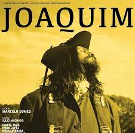
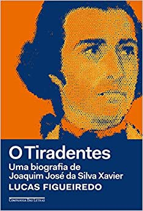

Filme Joaquim - 2017
Em 2017, foi lançado o filme Joaquim José da Silva Xavier que, como já devem imaginar, conta parte de minha vida. O foco desse filme é mostrar aspectos mais humanos e comuns de minha vida, me distanciando das imagens icônicas, perfeitas e heróicas que, muitas vezes, me são atribuídas.
que, até para mim, que vivi o acontecimento, a imagem de minha cabeça decapitada, em frente de uma igreja, debaixo de uma forte chuva, que figura logo na primeira cena, é aterrorizante.
Apesar da primeira cena do filme ser o retrato do fim da história, a narrativa não contempla os últimos acontecimentos de minha vida. As cenas retratam principalmente meu cotidiano e como acabei me afeiçoando com os ideais da Inconfidência Mineira, tendo a última cena sobre minha crença na necessidade de tomarmos o poder à força.
Bom, recomendo:
Livro: O Tiradentes
Em 2018, Lucas Figueiredo lançou um livro que traz, segundo o autor, minha biografia. Intitulado “O Tiradentes: Uma biografia de Joaquim José da Silva Xavier”.
O livro traz, em 520 páginas, informações muito bem organizadas sobre minha trajetória. Como o autor mesmo relata, seu intuito com a obra foi trazer uma luz sobre a minha figura do ponto de vista histórico.
Com arquivos de acervos nacionais e estrangeiros, Figueiredo Constrói um sólido texto, traçando minha vida desde a juventude, trabalho como militar e “Tiradentes” até meu envolvimento na Inconfidência Mineira. Se estiverem à procura de um livro para entender mais sobre minha trajetória, recomendo começar por esse.
Livro